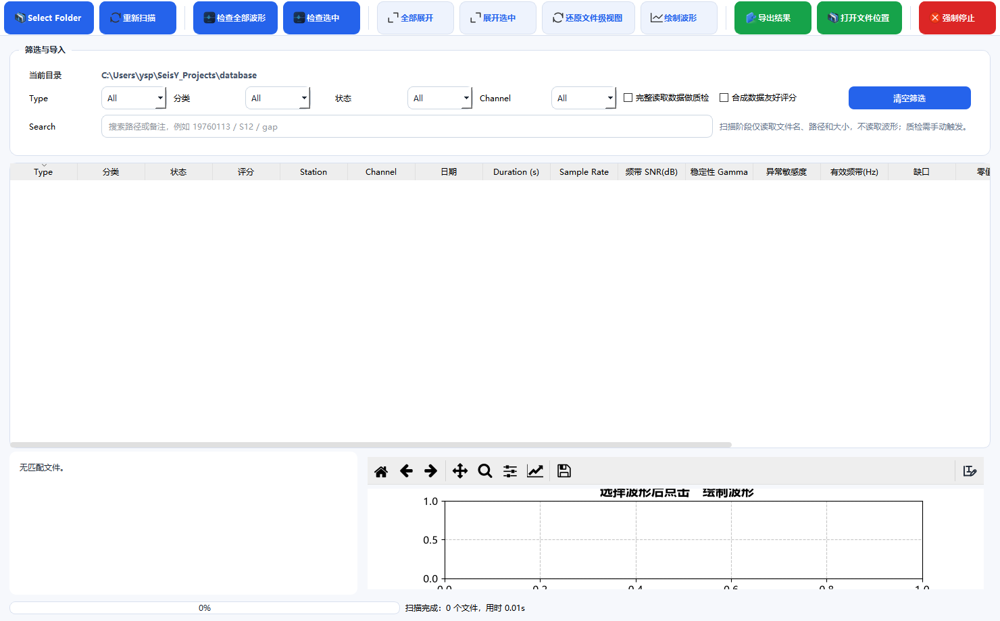
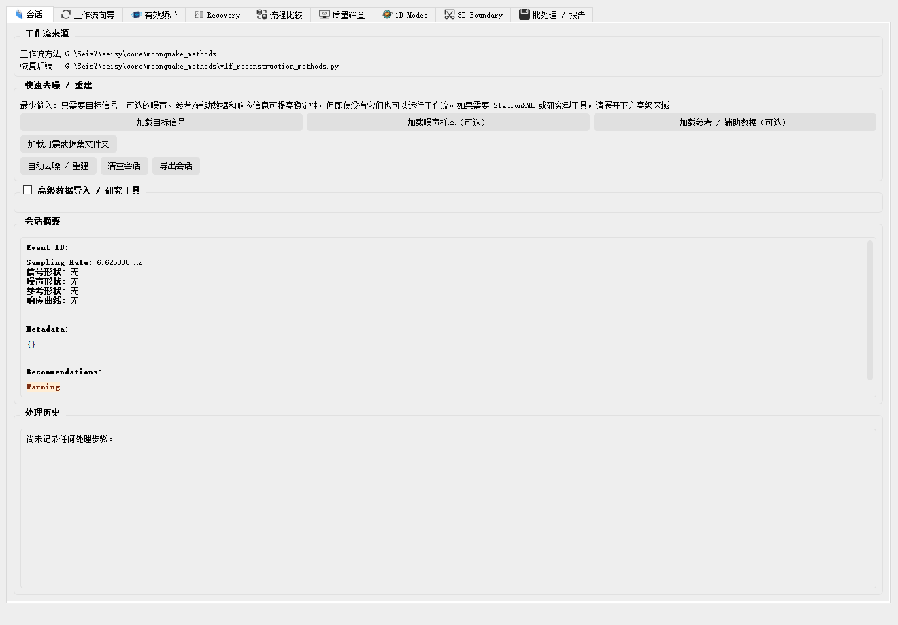
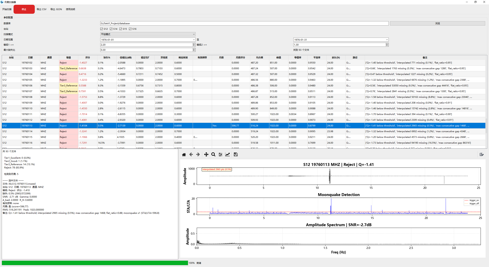

阿波罗数据与月震工作流
阿波罗被动地震数据有两个别处没有的特点：记录里带 -1 缺样哨兵，
以及时间标记需要 ATT 矫正。这一章的两个工具就是为这两件事准备的。
Apollo 数据质量浏览器

入口：工具 › Apollo 数据质量浏览器。
它的用途是批量筛选：给一个数据目录，扫一遍，按质量指标排出来，先把坏文件 挑掉再进入分析。
工具栏
| 按钮 | 作用 |
|---|---|
| 选择文件夹 | 指定要扫描的目录 |
| 重新扫描 | 目录内容变了之后重扫 |
| 检查全部波形 | 对全部文件做波形级质检（慢） |
| 检查选中 | 只查选中的那些 |
| 全部展开 / 展开选中 | 树视图展开 |
| 还原文件夹视图 | 回到按目录分组的视图 |
| 绘制波形 | 画出选中文件的波形 |
| 导出结果 | 把质检表导出成文件 |
| 打开文件位置 | 在资源管理器里定位 |
| 强制停止 | 中断正在进行的扫描 |
筛选条件
Type / 分类 / 状态 / Channel 四个下拉加一个搜索框。搜索框接受路径片段或
日期，例如 19760113 / S12 / gap。
勾选 完整读取数据做质检 会在扫描阶段就解码； 合成数据友好评分 用于人工合成或测试数据，避免它们因为「不像真实月震」 被判定为低分。
指标列怎么读
| 列 | 含义 | 判断 |
|---|---|---|
| 状态 | 质检结论 | 优先处理非正常状态 |
| 评分 | 综合得分 | 排序用 |
| 频带 SNR(dB) | 有效频带内的信噪比 | 低于 0 dB 基本不可用 |
| 稳定性 Gamma | 噪声平稳性 | 越大越不平稳 |
| 异常敏感度 | 对尖峰的敏感程度 | 高说明有脉冲干扰 |
| 有效频带(Hz) | 信号真正占用的频段 | 和采样率对照看 |
| 缺口 | 缺样情况 | 有缺口就要插值 |
| Duration (s) | 记录长度 | 太短的做不了低频分析 |
月震工作流（开发中，暂不可用）
月震工作流是一个尚未完成的实验性工具。界面上的标签页和按钮 大多已经搭好，但处理链路并未打通，也没有经过有效性验证—— 它的输出目前不可信。
具体来说：
- 各标签页之间的数据传递不完整，跨标签页操作可能拿不到上一步的结果；
- 去噪 / 重建算法尚未针对月震数据的低信噪比特性调优；
- 没有可复现的验证案例，无法说明结果好坏。
现在请用其它工具替代：单条记录的质量检查用上面的 Apollo 数据质量浏览器；去噪用 数据 › 预处理 › 去噪； 批量处理用 工具 › 批处理工作流；缺样修复用 工具 › 异常修复。
这个模块会在后续版本中重做，届时手册会同步更新。

入口：工具 › 月震工作流。
下面列出各标签页的设计意图，方便你了解这个模块将来会提供什么， 不代表这些功能当前可用。
标签页（设计意图）
| 标签 | 计划承担的工作 |
|---|---|
| 会话 | 当前会话的数据与摘要 |
| 工作流向导 | 按步骤引导完成一次处理 |
| 有效频带 | 分析信号真正占用的频段 |
| Recovery | 恢复/重建处理 |
| 流程比较 | 不同方法的结果对比 |
| 质量检查 | 处理前后的质量指标 |
| 1D Modes | 一维简正模 |
| 3D Boundary | 三维边界相关 |
| 批处理 | 批量执行 |
| 报告 | 汇总成报告 |
月震扫描器

入口：工具 › 月震扫描器。
与质量浏览器不同，扫描器的目标是从长记录里找出事件，而不是评价已知事件的质量。 给它一个目录，它按滑动窗 + 触发条件扫一遍，把候选事件列出来。
常见问题
扫描出上千个文件，但表格是空的？ 只做了第一级扫描。点「检查全部波形」或「检查选中」生成指标。
去噪后波形看着干净了，但频谱低端被削平？ 去噪算法常带高通特性。检查「有效频带」标签页，确认你要分析的频段还在。
月震工作流点了没反应 / 报错？ 该模块仍在开发中，属已知情况，见本节开头的说明。请改用质量浏览器、 异常修复或批处理工作流。